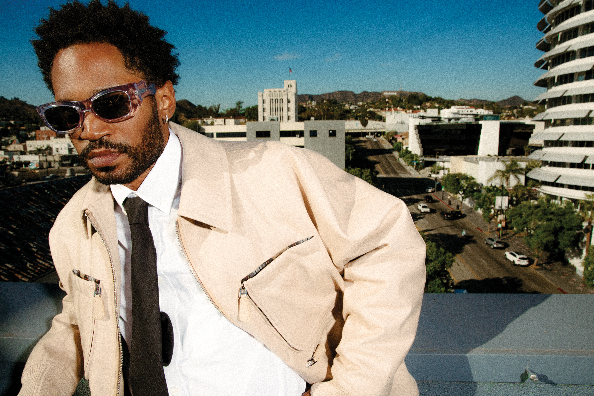
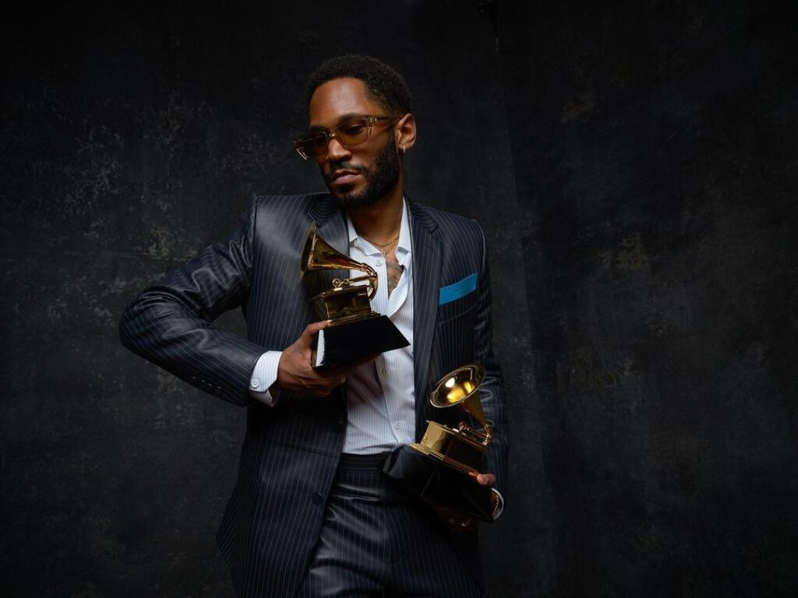
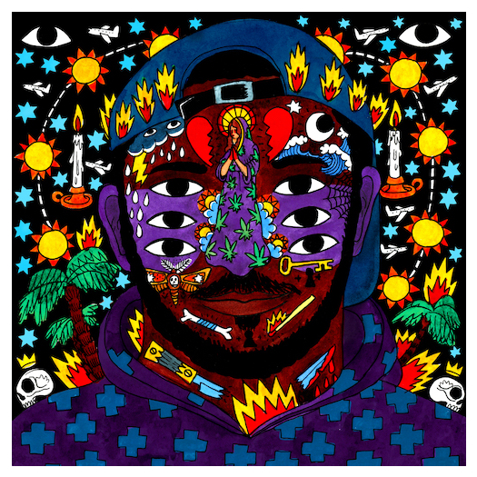
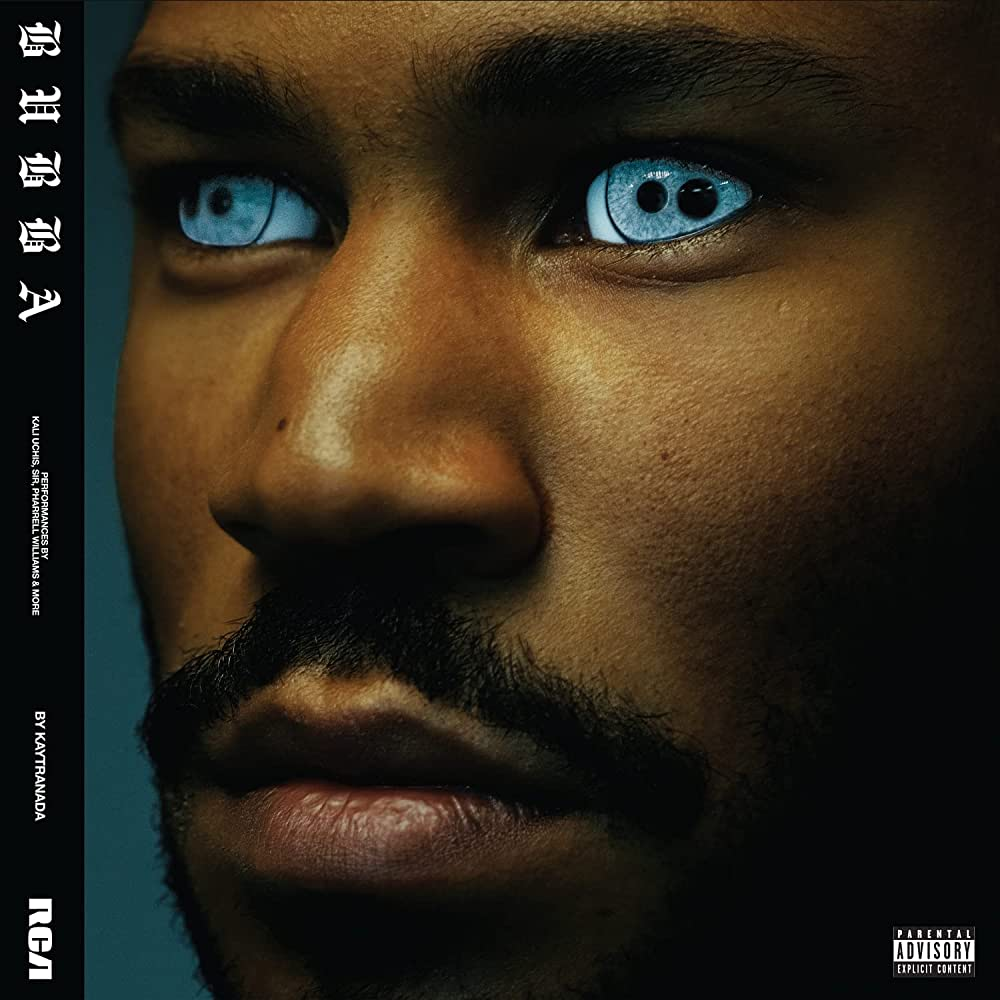

Louis Kevin Celestin (born August 25, 1992), known professionally as Kaytranada (stylized as KAYTRANADA, shortened as KAYTRA), is a Haitian-Canadian record producer, rapper, song-writer and DJ. Celestin rose to prominence after releasing a series of mixtapes, remixes, and original music projects beginning in 2010 under the alias Kaytradamus.
Kaytranada was born Louis Kevin Celestin on August 25, 1992, in Port-au-Prince, Haiti. Shortly after he was born, his family relocated to Saint-Hubert near Montreal where he was raised, and where he began his music career. Kaytranada's father was employed as a taxi driver and an estate agent, and his mother worked in healthcare. His parents divorced when he was 14. That same year, Kaytranada began to produce his own music after his brother Lou Phelps introduced him to FL Studio. The first song he ever sampled was Earth Wind & Fire's September, at 15 years old. Kaytranada ended up dropping out of high school to pursue music full-time to help support his family financially.
Celestin began his career under the name Kaytradamus in 2010. He released
two projects as Kaytradamus before changing his name to Kaytranada in
2012. Kaytranada was on the roster of HW&W Recordings, an independent
label based in Los Angeles and Toronto. Kaytranada has released 13
projects and 41 remixes. He has toured more than 50 Canadian, American,
European and Australian cities. In December 2014, he signed an exclusive
recording agreement with XL Recordings. During 2015, Kaytranada opened for
two nights of Madonna's Rebel Heart Tour, one in Canada and one in the
United States. Speculation arose that Kaytranada and producer Rick Rubin
had started working together when a photo of them surfaced online around
February 2015. It was later confirmed that they had formed a partnership
backed by Pulse Recordings. His debut album, 99.9%, was released on May 6,
2016. The album includes features from GoldLink, AlunaGeorge, Syd,
Anderson .Paak, and Vic Mensa, among others. He also collaborated with
Craig David on the song "Got It Good", which is on David's sixth studio
album, Following My Intuition. Kaytranada won the 2016 Polaris Music Prize
for his album 99.9%. The album received a score of 8.0 from Pitchfork.
 On December 13, 2019, his second album, Bubba, was released on
RCA Records. It received a score of 8.1 from Pitchfork. On March 14, 2021
Kaytranada won a Grammy for Best Dance Recording for '10%' and Best
Dance/Electronic Album for 'Bubba'. Celestin is one half of the hip hop
duo The Celestics, along with his brother Lou Phelps.


99.9%
BUBBA
GO TO TOP